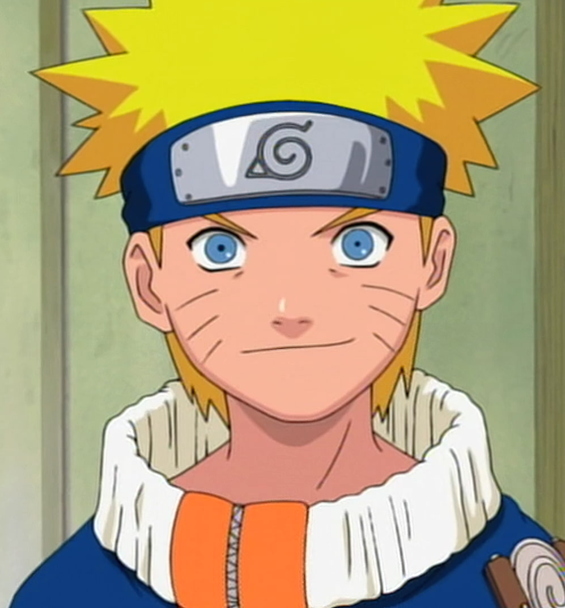
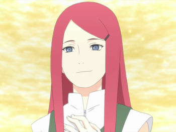
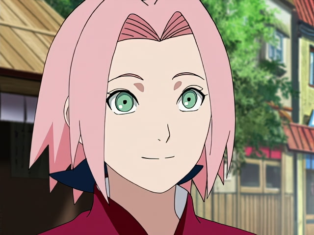

Наруто Узумаки
Шиноби (ниндзя) Деревни Скрытого Листа. Главный персонаж вселенной. В день своего рождения стал джинчуурики (носитель) Девятихвостого Демона-Лиса — судьба, из-за которой он стал изгоем для большей части людей в Конохе на протяжении всего своего детства. После присоединения к команде Какаши, Наруто упорно трудился, чтобы получить признание всех в деревне и исполнить свою заветную мечту стать Хокаге (правитель). В последующие годы, благодаря многим трудностям и испытаниям, он стал способным ниндзя, которого считали героем, и после во всем мире, он стал известен как Герой Скрытого Листа.
Семья
Наруто родился в ночь на 10 октября и был сыном Намиказе Минато (Четвертый Хокаге) и Узумаки Кушины (второго Джинчурики Кьюби). Родители Наруто назвали его в честь главного героя первой книги Джирайи, что и сделало его крёстным отцом. Она умерла во время Нападения Девятихвостого Демона-Лиса, отдав свою жизнь спасая Наруто.
Минато Намиказе - был Четвертым Хокаге Скрытого Листа. При жизни он был известен за свою скорость, что привело к появлению прозвища Желтая Вспышка Конохи. Он умер во время Нападения Девятихвостого Демона-Лиса, отдав свою жизнь, запечатав напавшего на деревню Лиса в своём новорождённом сыне.

Кушина Узумаки - была ниндзей Скрытого Листа, происходившей из клана Узумаки Деревни Скрытых Водоворотов. Была вторым носителем Девятихвостого Лиса.Была женой Четвёртого Хокаге и матерью Наруто Узумаки.
Самые близкие друзья
Сакура
Сакура Харуно — ниндзя из Скрытого Листа. Став частью Команды 7, Сакура быстро осознаёт свою неподготовленность к суровой жизни шиноби. Тем не менее, после прохождения тренировок под руководством Цунаде, она преодолевает это и становится квалифицированным ниндзя-медиком. Влюблена в Саске, а Наруто влюблен в нее.
Саске
Саске Учиха — один из последних выживших членов клана Учиха из Деревни Скрытого Листа. После того, как его старший брат Итачи вырезал весь их клан, Саске поставил перед собой жизненную цель отомстить за клан и семью, убив Итачи. Он попадает в Команду 7, когда становится ниндзя, и благодаря состязаниям со своим соперником и лучшим другом, Наруто Узумаки, начинает оттачивать свои навыки. Недовольный своим прогрессом, он покидает деревню СкрытогоЛиста, чтобы обрести силу, необходимую для осуществления мести. Годы, проведённые в поисках мести, стали невероятно взыскательными и неразумными, равно как и изолировали его от других, из-за чего он вскоре становится международным преступником.